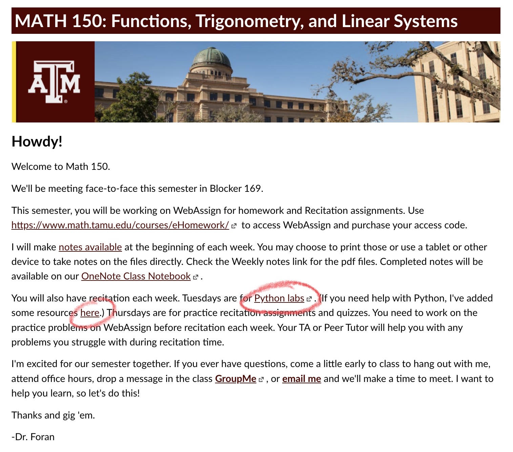

Necessary equipment: Some type of display (such as a small whiteboard or tablet) to present solutions. Also markers and eraser. Ah, also bring pens/pencils to take weekly quizzes.
We will form groups, and you will be lead by a Peer Mentor. In the groups you will present solutions to problems given to you the previous week (more on this later).
There will be an individual quiz at the end of the session. It will usually consist of 3-4 questions based on the material of the previous week.
Absent? Need makeup? report to me your absence no later that the following Monday at 11:59 PM
Structure of Laboratories (Wednesdays)
Necessary equipment: Laptops, fully charged! We do not always have outlets available.
We will also form groups of 3-4 students each. If you already have buddies to work with, please one of you email me, CC'ing everyone, and stating that you want to work together. Deadline: Wednesday, Aug. 31st at 5 PM.
Download Jupyter notebooks (interface for python) in Anaconda. Instructions available here.
Python assignment webpage is found in Canvas. See mark below.

Submit Python labs to Gradescope. You will need to set up a free account USING YOUR @TAMU.EDU EMAIL. Otherwise you may not have access to the course there.